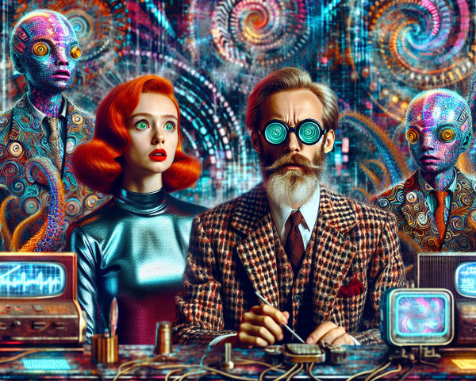

Фентезі - це чарівний світ, де реальність поєднується з магією та міфологією. У цих творах читачі зустрічають лицарів, чарівників, драконів та інших фантастичних істот. Відомі представники цього жанру: Дж. Р. Р. Толкін, Джоан Роулінг, Джордж Р. Р. Мартін.
Кожна книга фентезі створює унікальний всесвіт з власними законами, історією та персонажами. Цей жанр дозволяє читачам втекти від повсякденності та опинитися в світі, де все можливо.
Детективний жанр захоплює читачів загадковими сюжетами та логічними головоломками. Основним завданням детектива є розкриття злочину шляхом аналізу доказів та свідчень. Класики жанру: Артур Конан Дойл, Агата Крісті, Реймонд Чандлер.
Читачі детективів отримують можливість разом з героями розплутувати складні справи, аналізувати мотиви та знаходити істину. Цей жанр розвиває логічне мислення та спостережливість.

Наукова фантастика досліджує майбутнє людства, технологічний прогрес та його вплив на суспільство. Цей жанр часто містить елементи прогнозування та роздуми про етичні аспекти наукових відкриттів. Відомі автори: Айзек Азімов, Філіп К. Дік, Рей Бредбері.
Книги наукової фантастики змушують замислитися про наслідки технологічного розвитку та місце людини у Всесвіті. Вони часто піднімають важливі філософські питання про природу людства та цивілізації.